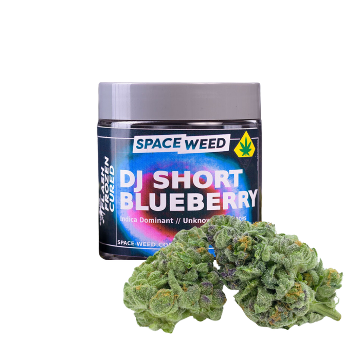
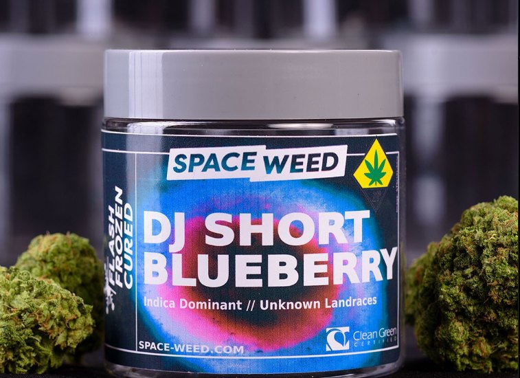

Searching for Space Weed?
Find Space Weed.
Space Weed is sold at licensed dispensaries only. We don’t have a store list to publish yet.
For adults 21+.


Docking checklist · the course to the jar
- Search the menu
- Call ahead
- Ask for it by name

On the shelf
What to look for.
Space Weed and Flash Frozen Cured on the jar’s label.
- A
- The white Space Weed box at the top of the label.
- B
- Flash Frozen Cured, set sideways down the label beside the snowflake.
Docking log · your store
Tell us your store.
If a store near you doesn’t carry it yet, send us the store’s name. We keep a list.
Search for Space Weed on your dispensary’s online menu, or ask for the jar at the counter. It’s always best to call ahead or check store websites to make sure Space Weed is currently in stock!
At the counter · step 03
Ask for it by name.
Ask the budtender to show you the jar next to a conventionally cured gram. Same weight on the scale.
You’ll see the difference before anyone explains it. It breaks up by hand. No grinder.
How it works